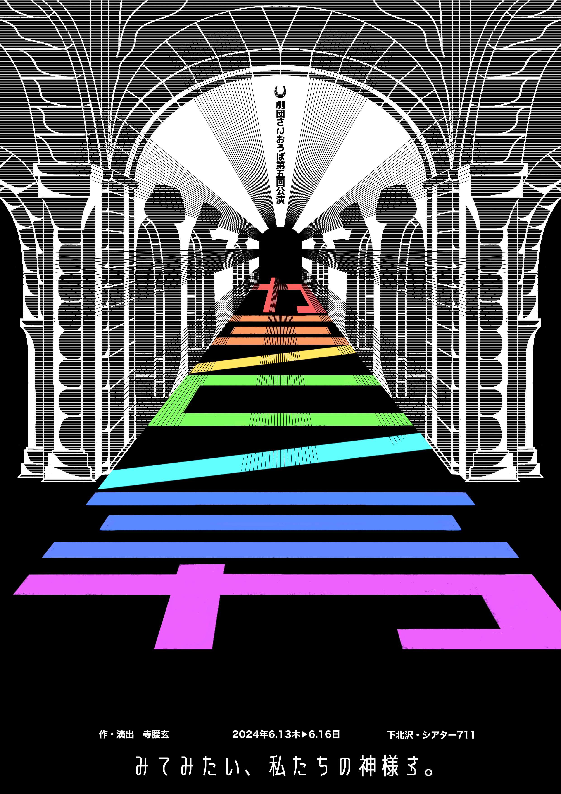

第五回公演『カミノコノミカ』
―――聖書を置き、町へいき、かえりみてみたい。わたしたちの神様を。
あらすじ
今から少し昔の話。とある国のとある地方、さらにその山奥に、タヤット教という宗教の修道学院があった。表向きには厳格なこの修道学院も、数百年のうちにすっかり腐敗。修道士たちはペットを飼ったり、隠し撮りをしたり、買い食いをしたりと、堕落した日々を過ごしていた。
しかしある日、一人の修道女が「神のお告げ」とやらに目覚めたことで状況は一変。お告げは本当なのか?それとも嘘なのか?そもそも彼らの言う神様など存在するのだろうか？
信仰と煩悩の間で揺れ動く修道士たちを描いた、どこかファンタジックな群像喜劇。
作品紹介
下北沢・シアター711で幕を開けた、劇団さいおうば初の明治外での単独本公演。観客動員数は当初の想定を大きく超え、250名超の観客動員数を記録した。また、本公演から劇団さいおうばのパンフレット『さいおうばのしっぽ』の刊行がスタート。豪華なイラスト、そして豊富な似顔絵に役者陣は喜び、演出からの激励以上にやる気を出したという。
【作・演出】
寺腰玄
【出演】
大里尚輝(劇団さいおうば)
沖遥伽
小原男侍
岸陽菜
千田ゆりな
蓮池龍慈
本山裕也
宮嵜明理
三浦那由多(劇団さいおうば)
【スタッフ】
演出補佐
盛野莉紗子
盛野莉紗子
演出助手
金子レイチェル奈々 中山莉子
金子レイチェル奈々 中山莉子
舞台監督
西田有希
西田有希
舞台監督補佐
井藤秀哉 小坂淳太
井藤秀哉 小坂淳太
舞台美術
横山奏 澤田華 木下詩月 田村美侑 中西悠 中山莉子 都澤和奏
横山奏 澤田華 木下詩月 田村美侑 中西悠 中山莉子 都澤和奏
音響
小林アスマ 片山舞 沖遥伽 宮嵜明理
小林アスマ 片山舞 沖遥伽 宮嵜明理
証明
丸山文也 汐恩輝 金子レイチェル奈々
丸山文也 汐恩輝 金子レイチェル奈々
宣伝美術
田口太陽 大里尚輝 田村美侑
田口太陽 大里尚輝 田村美侑
パンフ編集
大里尚輝 田口太陽 寺腰玄 西田有希 蓮池龍慈 三浦那由多
大里尚輝 田口太陽 寺腰玄 西田有希 蓮池龍慈 三浦那由多
衣装・小道具
江州翔太 新井美琴 深川あかり 矢下柚季 山口優花
江州翔太 新井美琴 深川あかり 矢下柚季 山口優花
制作
沼田愛海 有地菜穂 松本しゅりか
沼田愛海 有地菜穂 松本しゅりか
映像スチール
富田百香 中山莉子 野口みさき 森陽香
富田百香 中山莉子 野口みさき 森陽香
会計
三浦那由多
三浦那由多
広報
木室七重
木室七重
【スペシャルサンクス(敬称略)】
Webサイト作成・運営
鬼沢祥太朗 鈴木翔也
鬼沢祥太朗 鈴木翔也
PV撮影協力
鈴木崇一郎 伊藤駿佑
鈴木崇一郎 伊藤駿佑
舞台美術・音響・照明
平川大翔
平川大翔
声の出演
沼口隼也
沼口隼也
【会場】
本多劇場グループ シアター711
